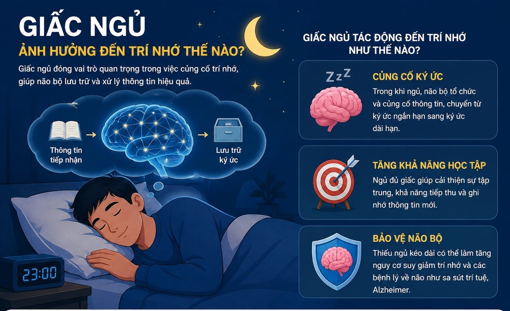
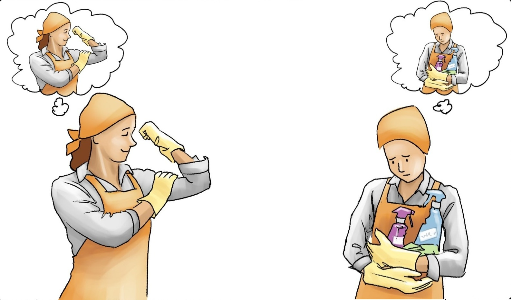
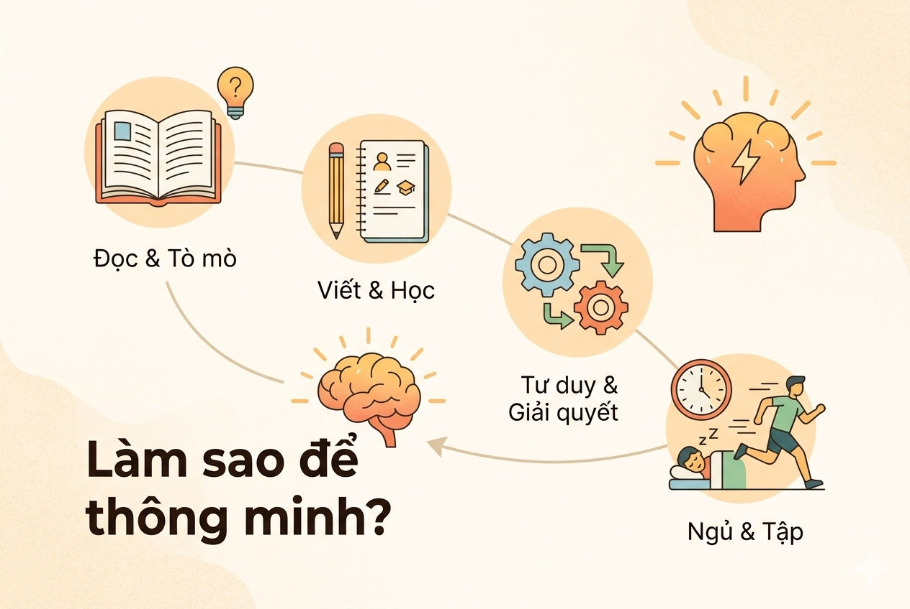
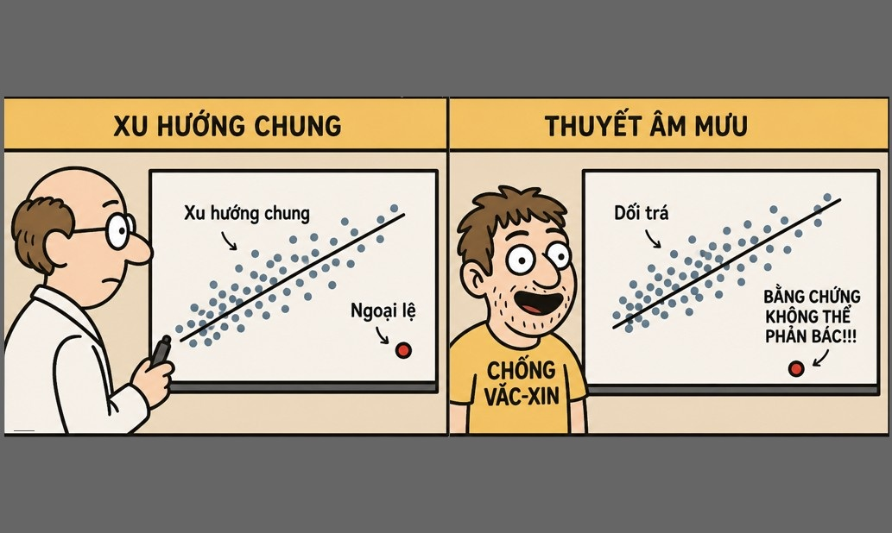
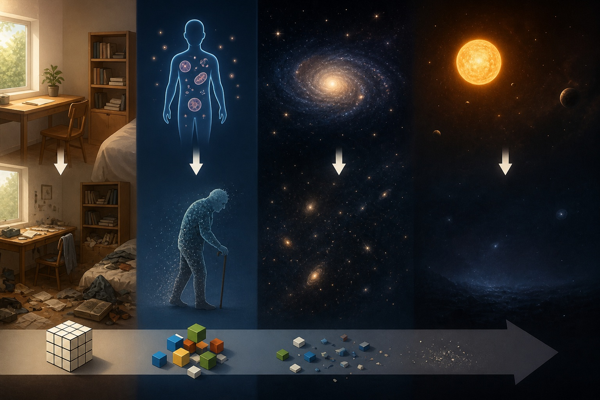

Nobel y học 2016 autophagy (tự thực bào) 🧬

Bỏ ăn sáng giúp trẻ hoá, giảm viêm, giảm nguy cơ ung thư ở cấp độ tế bào.
Bỏ ăn sáng giúp trẻ hoá, giảm viêm, giảm nguy cơ ung thư ở cấp độ tế bào.

Giấc ngủ đóng vai trò thiết yếu trong việc củng cố và phát triển trí nhớ.

Niềm tin không chỉ là một trạng thái tinh thần - nó có thể tạo ra những thay đổi có thể đo lường được trong cảm nhận, hành vi, kết quả thực tế.

🎬 Bộ não của bạn không phải là một chiếc máy quay; nó không ghi lại cuộc đời bạn, nó biên tập lại chính nó.

Thông minh không phải là một món quà, nó là một "cơ bắp" bạn có thể rèn luyện mỗi ngày.

Tư duy xác suất: Khi một ngoại lệ bị biến thành “bằng chứng”

Entropy là một khái niệm trong vật lý dùng để mô tả mức độ hỗn loạn (mất trật tự) của một hệ.